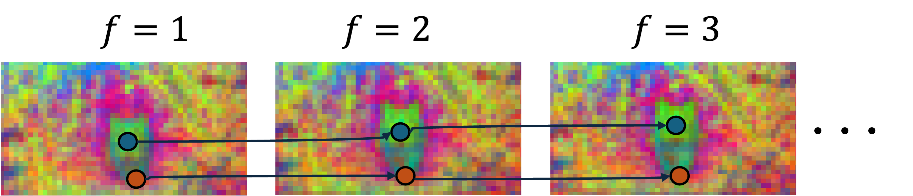
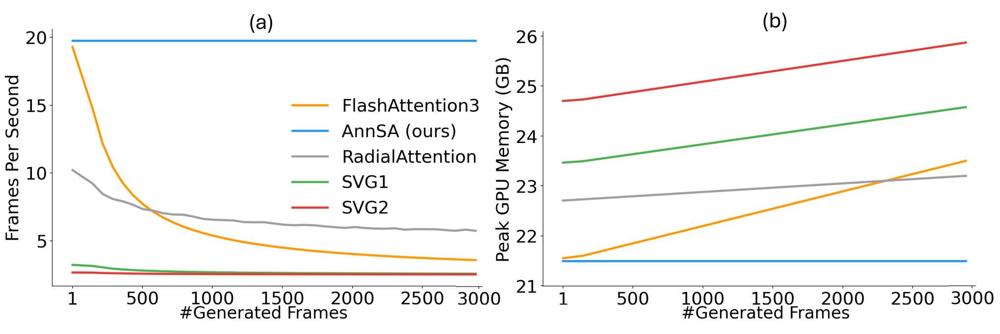

Picture an editor logging a two-minute shot of a walking cat. Instead of a fresh card for the cat every frame, they keep only the latest card and tally how many frames it stands for, and when checking the script they read only the lines about who is on screen now. If the cards are true duplicates, the tally makes the merge lossless.
고양이가 걸어오는 2분짜리 장면을 정리하는 편집자를 떠올려 보자. 매 프레임마다 고양이 카드를 새로 만드는 대신 가장 최근 카드 한 장만 두고 몇 프레임을 대신하는지 개수를 적는다. 대본을 확인할 때는 지금 화면에 나온 인물에 대한 줄만 읽는다. 카드가 진짜 중복이라면 적어 둔 개수 덕분에 합쳐도 잃는 것이 없다.
How it works: track, merge, look up작동 방식: 추적하고, 합치고, 찾아본다
The same patch of the cat reappears in every frame, so its keys only need storing once. Matching each current query to its closest past key recovers these tracks cheaply.
고양이의 같은 부분이 매 프레임 다시 나오므로, 그 키는 한 번만 저장하면 된다. 현재 쿼리마다 가장 비슷한 과거 키를 찾으면 이 궤적을 싸게 복원할 수 있다.

- TempCache: merge tracked keys.TempCache: 추적된 키를 합친다.Similar keys matched across frames form a group: keep the newest key, average values, add log(group size) to its score.프레임을 건너 짝지어진 비슷한 키를 한 그룹으로 묶는다. 최신 키 하나만 남기고, 값은 평균 내고, 점수에 log(그룹 크기)를 더한다.
- AnnCA: prune the prompt per frame.AnnCA: 프레임마다 프롬프트를 솎아 낸다.Hash frame queries and prompt keys into buckets (LSH, locality-sensitive hashing, or 8-bit codes); tokens sharing no bucket are skipped.프레임 쿼리와 프롬프트 키를 버킷에 나눠 담는다(LSH, 비슷한 벡터가 같은 칸에 들어가게 하는 해싱, 또는 8비트 코드). 쿼리와 겹치는 버킷이 없는 토큰은 건너뛴다.
- AnnSA: attend within buckets.AnnSA: 같은 버킷 안에서만 어텐션한다.Reuse those semantic buckets for self-attention: each query sees only keys in its bucket(s), via block-sparse FlashInfer kernels.그 의미 버킷을 셀프 어텐션에 재사용한다. 각 쿼리는 자기 버킷의 키만 보고, 블록 희소 FlashInfer 커널로 계산한다.
Key idea: fewer keys, same attention핵심: 키는 적게, 어텐션은 그대로
TempCache computes on about one-sixth of the cache yet keeps more attention mass than cache-reuse baselines. It drops only duplicate keys.
TempCache는 캐시의 약 6분의 1만 계산하면서도 캐시 재사용 기준선보다 어텐션 질량을 더 많이 지킨다. 중복 키만 빼기 때문이다.
Results: 10× faster over 3000 frames결과: 3000프레임에서 10배 빠르다
The full stack is about 2.5× faster than the best baseline combo and keeps dense-level quality. The baseline combo buys speed with collapsed quality.
전체 조합은 가장 좋은 기준선 조합보다 약 2.5배 빠르고 품질은 dense 수준이다. 기준선 조합은 속도를 얻는 대신 품질이 무너진다.
Dense attention slows from ~19 to ~4 FPS as the cache grows; ours holds ~20 FPS with flat memory. That makes multi-minute streaming practical.
캐시가 커지면서 dense 어텐션은 약 19에서 약 4 FPS로 느려지지만, 제안 방법은 약 20 FPS를 유지하고 메모리도 평평하다. 몇 분짜리 스트리밍이 가능해지는 이유다.

The world model gains less and loses some quality. LongVie2: 6.9× faster, but about 5 points below dense.
월드 모델에서는 이득이 작고 품질도 조금 잃는다. LongVie2에서 전체 조합은 6.9배 빠르지만 LongVGenBench는 dense보다 약 5점 낮다.
| Method방법 | RF PSNR | RF VBench | RF speed | LV2 score | LV2 speed |
|---|---|---|---|---|---|
| Dense FA3 | – | 84.08 | ×1.0 | 69.67 | ×1.0 |
| FlowCache+RadialAttn | 16.98 | 45.15 | ×4.4 | 49.84 | ×3.1 |
| TempCache-Quant | 24.26 | 84.19 | ×3.2 | 63.16 | ×3.7 |
| AnnSA-Quant | 25.77 | 83.29 | ×2.8 | 66.43 | ×5.4 |
| All Ours-LSH | 25.71 | 84.02 | ×10.7 | 64.91 | ×6.3 |
| All Ours-Quant | 25.73 | 83.99 | ×10.8 | 63.69 | ×6.9 |
Merging identical keys is exact if you add log(group size) to the merged logit, a lossless primitive for any KV compression where tokens repeat (video, multi-turn agents). Find redundancy by correspondence, not by recency.같은 키를 합칠 때 합친 로짓에 log(그룹 크기)를 더하면 오차가 없다. 토큰이 반복되는 KV 압축(비디오, 여러 턴 에이전트)이라면 어디서든 다시 쓸 만한 무손실 도구다. 중복은 최신순이 아니라 대응 관계로 찾아라.
All methods run with no context-window limit, although Rolling-Forcing normally caps its window, so ×10.8 overstates the gain over the usual setup. Fidelity to dense is only PSNR ≈ 25.7 dB (similar, not identical), and on LongVie2 the score drops about 5 points.모든 방법을 컨텍스트 창 제한 없이 돌렸는데, Rolling-Forcing은 원래 창을 제한한다. 그래서 ×10.8은 보통 설정 대비 이득을 과장한다. dense 출력과의 충실도도 PSNR ≈ 25.7 dB로 '비슷함'이지 '같음'이 아니고, LongVie2에서는 점수가 약 5점 떨어진다.